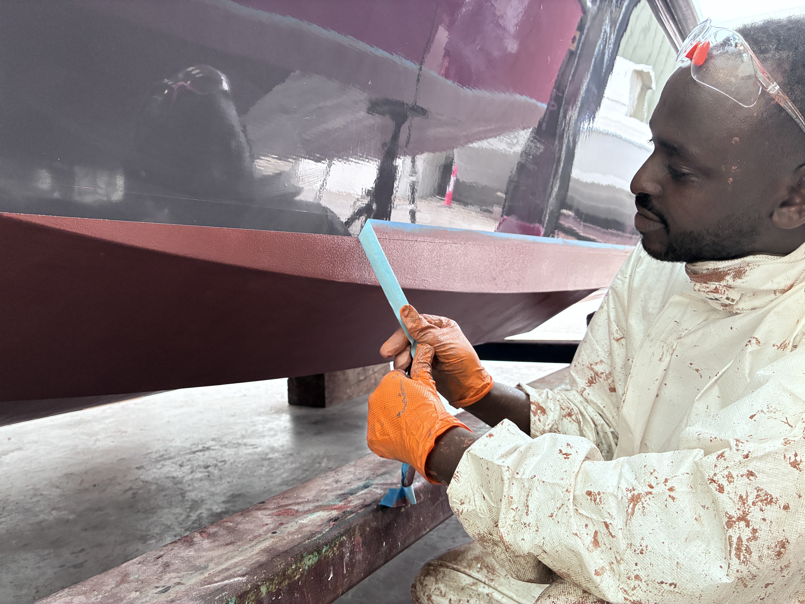

Long-lasting
A treatment can remain effective for ten years or more, subject to conditions, use and maintenance.
Bristol · Portishead · Cardiff · South West
Careful hull preparation and application of genuine copper-epoxy antifouling for suitable yachts, motorboats and canal boats.

An alternative to annual antifouling
Coppercoat combines high-purity copper powder with a durable epoxy resin. Correctly applied, it offers long-term fouling protection without repainting the hull every season.
A treatment can remain effective for ten years or more, subject to conditions, use and maintenance.
The cured epoxy coating is considerably more abrasion-resistant than conventional soft or eroding antifouling.
The surface can be finished smoothly, helping owners avoid the rough build-up created by repeated layers of paint.
Preparation determines performance
Existing conventional antifouling must be completely removed. We inspect the exposed hull, prepare a clean and sound surface, use a compatible epoxy system where required, and apply the specified Coppercoat coats continuously under suitable conditions.
Every boat is considered individually. Moisture, osmosis, corrosion, unstable coatings or substantial fairing requirements may need to be addressed before application.
Suitable boats
Coppercoat can be used on most conventional rigid boat hulls when the correct preparation and primer system are used. GRP boats with a dry, sound hull are usually the most straightforward candidates.
Mobile Coppercoat service
Harbour Shine works with boat owners and suitable boatyards across the Bristol Channel, River Avon and surrounding region.
Bristol Harbour, Bristol Marina, Portishead Marina, Clevedon and North Somerset.
Cardiff Bay, Cardiff Marina, Penarth Marina and surrounding South Wales locations.
Sharpness Marina, Saul Junction, Gloucester Docks and the Gloucester & Sharpness Canal.
Bath, Saltford, Portavon, Keynsham and other accessible River Avon boatyards.
Tewkesbury Marina, Bredon and nearby River Severn and River Avon locations.
Other marinas and yards across Somerset, Gloucestershire, Wiltshire and the South West by arrangement.
Harbour Shine is an independent contractor and is not affiliated with the marinas named above. Work is subject to each boatyard's permission and facilities.
Get a quote
Send the boat model, length, location, hull material and—if known—the age and condition of its existing antifouling.
07794 527 449 gus.ferranti@gmail.com